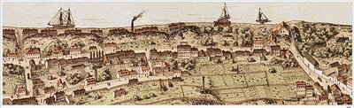

|
Och kan det vara rimligt att barn som kan ha nytta
av den friska luften över vattnen och sjuka som kan ha
glädje av utsikten ska avhysas - från barndaghemmet
och från sjukhuset? Fjällgatan är ingen kontorsmiljö,
har aldrig varit det, borde inte få bli det. Men man bör
hastigast möjligt se till att denna unika gata och den
gamla bebyggelsen och täpporna som finns kvar får
rang och värdighet av kulturreservat, rustas upp och
genom en bro över Renstiernasgatan åter förbinds med
resten av Stigberget. Gör man det går det att skapa ett
fint flanörstråk från Mosebacke till Ersta.
|
Vi har förstört så mycket av våra vatten och våra
berg. Nu måste vi vara mycket försiktiga med det vi
har kvar, inte begå mer våld än nöden absolut kräver.
Vad som än händer: försiktighet, ömsinthet.
Det är en vädjan, en bön.
Ur Ett berg vid vattnet, 1969
P A Fogelström
|
|

Fjällgatan. Panoramabild från 1870-talet av Heinrich Neuhaus
|
Efter stadsfullmäktiges principbeslut i reservatsfrågan 1956
restaurerades och moderniserades slutligen husen under 1980-talet.
Ur Stockholmsliv II, Staffan Tjerneld, 1950
Den äkta 1700-talsgatan på Söder var Fjällgatan och är det för
övrigt till en del även i dag. Men tiden har ju stympat den hårt. Den
gamla Fjällgatan började vid kyrkogårdsgrinden rätt bakom högaltaret i Katarina kyrka precis som i någon av 1700-talets lummiga svenska
småstäder och löpte i en graciös båge med två jämna husrader, där
gavlar och fasader visserligen ständigt växlade i höjd och färg, men
som ändå bildade en märkvärdig enhet. Höjden över staden anade
man mest i ljuset och den friska vinden, det var bara då en port i ett
plank öppnades som man kunde få en glimt av utsikten eller vid Söderbergs trappor, som mödosamt klättrade upp från Stadsgården.
Kontakten med kyrkan och det småstadsaktigt slutna underströks av
att gatan enligt gammal sed hette Katarina östra kyrkogata.
Den första stora attacken mot denna 1700-talsmiljö var framdragandet av Renstiernas gata vid sekelskiftet. En klippklyfta sprängdes
fram mot Stadsgårdsbranten, som klöv gatan i två delar, vilka efteråt
fick så liten kontakt med varandra, att det inte var någon större skada, då biten på Katarinasidan döptes om till Mäster Mikaels gata. Enheten var ändå spolierad. Vad som nu finns kvar av den gamla Fjällgatan är ett par reservat, av vilka det ena ligger alldeles under Statens Hantverksinstituts i och för sig prydliga nybygge och det andra
på Stigberget nedanför Navigationsskolan.
|
|
{kind=link}